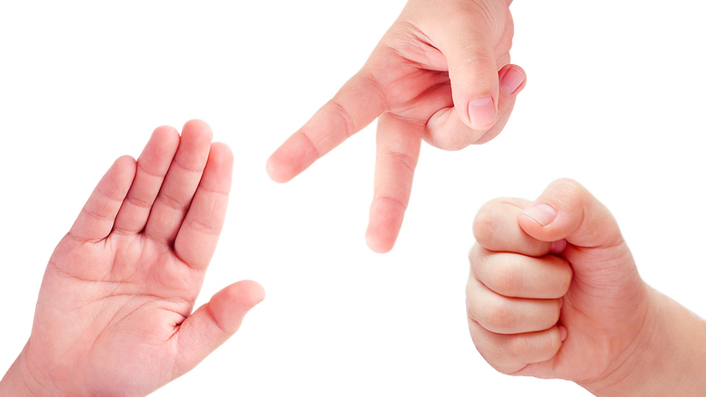
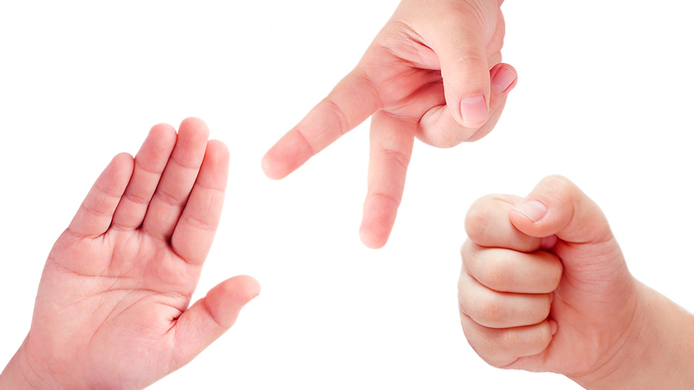

ROCK PAPER SCISSOR
ROCK PAPER SCISSOR esta dedica a crear diversion para todos nuestros visitantes ya que contamos con un tablero donde nuestros jugadores podran empezar sus partidas y llevar el conteo de como van en cada partida, tambien podran interactuar con otros jugadores Este proyecto tiene como objetivo aprender sobre html css y javascript , se realizara varias veces incluyendo diferentes patrones de diseno, logica entre otras cosas
ROCK PAPER SCISSOR esta dedica a crear diversion para todos nuestros visitantes ya que contamos con un tablero donde nuestros jugadores podran empezar sus partidas y llevar el conteo de como van en cada partida, tambien podran interactuar con otros jugadores Este proyecto tiene como objetivo aprender sobre html css y javascript , se realizara varias veces incluyendo diferentes patrones de diseno, logica entre otras cosas
A continuacion podras ver algunos ejemplos de como es el juego en la vida real:
 
